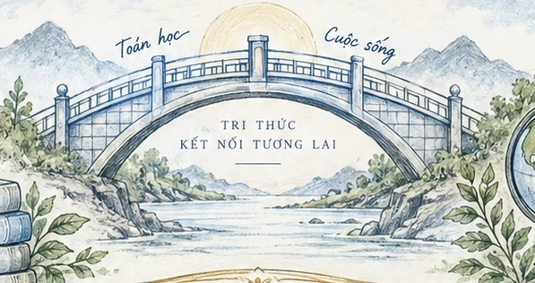

Bộ quy chuẩn giao diện · 6.2.0
Một ngôn ngữ thiết kế.
Xuyên suốt hành trình.
Ấm áp nhưng không trẻ con. Rõ ràng nhưng không khô cứng. Hình vẽ mang cảm xúc; văn bản và thao tác vẫn dễ đọc, dễ sử dụng.
Ý tưởng chủ đạo
Cây cầu từ hiểu đến tự chủ.
Tình huống ↔ Mô hình Toán học ↔ Giải thích. Người học tự thử, nhận gợi ý khi cần và được quyền quay lại điều chỉnh.
Bảng màu
Giữ cùng các biến màu trên trang chủ, kho bài, bài học, cửa sổ trợ giúp và trang giáo viên. Màu không được là dấu hiệu duy nhất để thông báo đúng/sai.
Xanh cây cầu
--green
#285B48
Vàng điểm nhấn
--gold
#D5B66C
Chữ và thứ bậc nội dung
Tiêu đề lớn · Serif hệ thống
Từ câu chuyện đời sống
đến lời giải em hiểu.
Dùng Noto Serif và Noto Serif Italic được đóng gói sẵn, có đủ dấu tiếng Việt. Phông dự phòng là Georgia và Times New Roman. Tiêu đề giàu cảm xúc tập trung ở trang giới thiệu.
Nội dung · Noto Sans
Quan hệ này dựa vào câu nào trong đề?
Đọc, nhập liệu và giải thích dùng Noto Sans được đóng gói sẵn, không phụ thuộc CDN. Ở màn hình học, ưu tiên câu hỏi, dữ kiện và thao tác; không dùng chữ nghệ thuật cho công thức hoặc hướng dẫn.
Một ý chính mỗi cụm. Có khoảng thở giữa câu hỏi, lựa chọn và trợ giúp.
Biểu trưng và minh họa

Biểu trưng đường nét đơn giản: vòm cầu và dòng chảy. Tranh cây cầu lấy từ mẫu bìa AI người dùng cung cấp, chỉ dùng ở trang giới thiệu. Màn hình giải bài không đặt tranh nền dưới dữ kiện.
Chữ chức năng là văn bản HTML, không ghép vào ảnh. Minh họa được ghi nguồn AI; không giới thiệu là sản phẩm vẽ tay thật của học sinh.
Thành phần và vai trò
Nút hành động
Nút chính xanh dành cho việc tiếp tục. Nút phụ nền giấy cho lựa chọn khác. Liên kết nhẹ cho tìm hiểu thêm.
Trạng thái trung thực
Lượt làm 1Đúng gần nhất ≠ tự làm độc lập ≠ đã làm chủ năng lực. Chỉ số hiển thị đúng với điều được ghi trong ứng dụng.
Đáp số phù hợp. Em hãy đối chiếu cách đặt ẩn, phương trình và điều kiện.
Bản đồ đồng bộ các màn hình
| Màn hình | Điều người xem cần nhận ra | Ưu tiên thiết kế |
|---|
| Trang chủ | Sản phẩm hỗ trợ tự hiểu, không làm thay. | Cây cầu, thông điệp, một hành động bắt đầu rõ. |
| Kho học liệu | Nhiều câu chuyện, các nhóm quan hệ. | Bộ lọc, tên bài, mục tiêu, lối vào nhiệm vụ. |
| Bài học | Đọc → quan sát → giải thích → kiểm tra. | Đề rõ, mô phỏng gần câu hỏi, trợ giúp theo nhu cầu. |
| Hành trình học | Lượt làm và trợ giúp được ghi riêng. | Bảng dễ đọc, sao lưu rõ, không vẽ điểm năng lực giả. |
| Về dự án | Tâm tư, phạm vi và giới hạn bằng chứng. | Tên đầy đủ, thông tin cụ thể, không dùng số liệu chưa có. |
| Giáo viên | Dùng công cụ đúng nhiệm vụ và đúng đợt. | Mở trực tiếp, in phiếu, đường dẫn thật đã cấu hình. |
Quy tắc giữ cho các lần nâng cấp sau
Không đổi màu, cách gọi và vị trí thao tác một cách rời rạc giữa các trang. Không giấu trợ giúp chỉ vì người học chọn tự làm. Không dùng bấm đủ bước làm chứng nhận năng lực. Không tự thêm kết quả nghiên cứu để làm trang giới thiệu có vẻ thuyết phục hơn.
Với phần nội dung học, sự chính xác và khả năng đọc quan trọng hơn trang trí. Với phần giới thiệu, chỉ cần một minh họa cây cầu đủ mạnh; không phủ toàn trang bằng sách, kính hiển vi, bình thí nghiệm hoặc khẩu hiệu.
Nền, bảng màu, cỡ chữ và bố cục ở assets/design.css. Tài liệu nguồn và giới hạn ở docs/NGUON_VA_AI.md và docs/KIEM_THU.md.